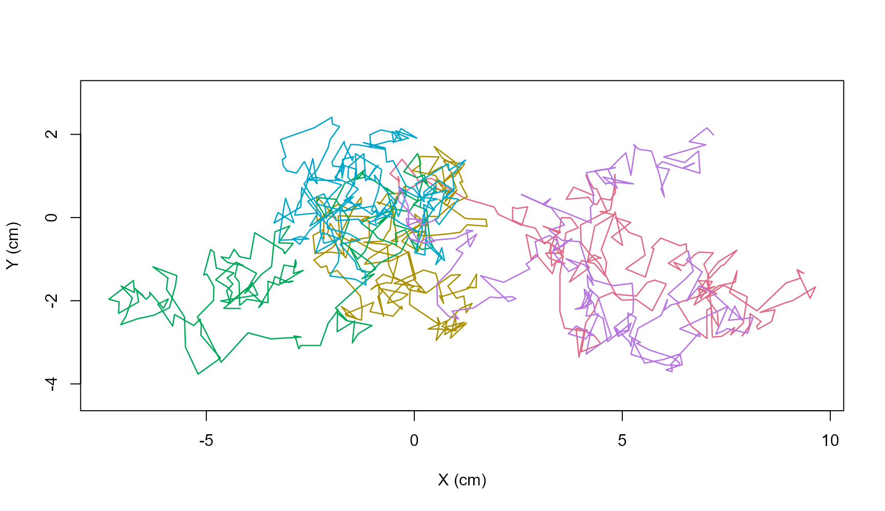
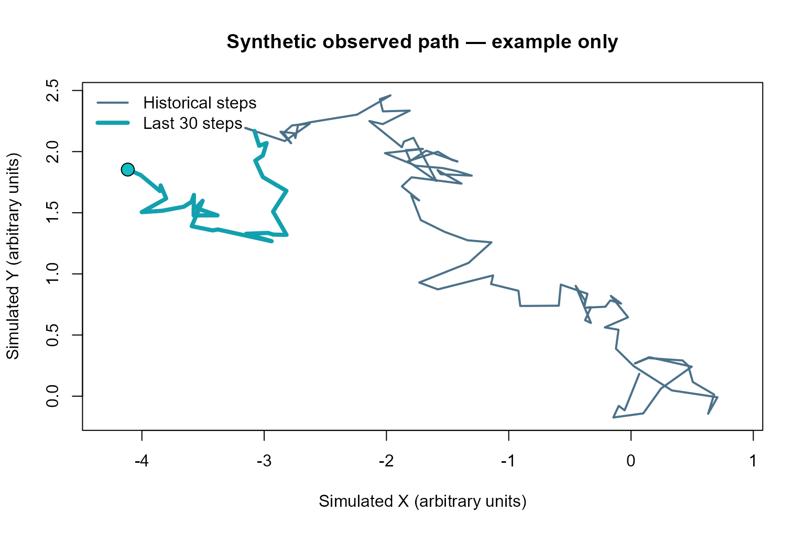
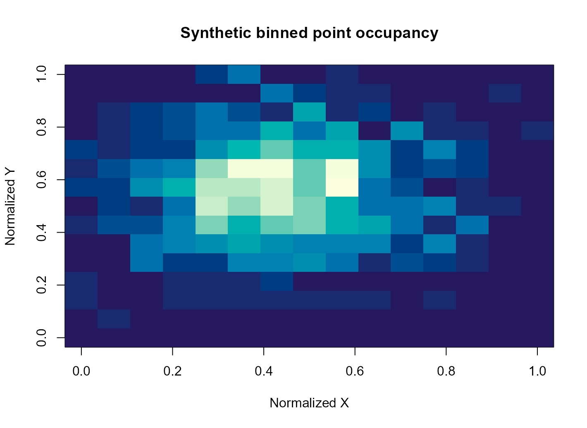
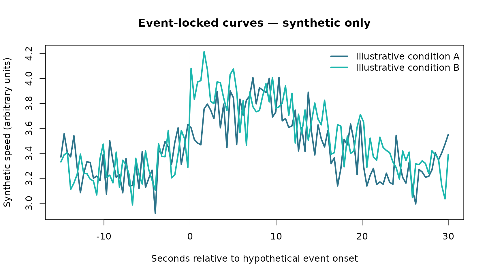

Scientific visualization gallery
Source:vignettes/articles/visualization-gallery.Rmd
visualization-gallery.RmdVisualization gallery
The figures here are synthetic teaching demonstrations. They do not use private fish recordings, claim real detector accuracy or represent measured animal welfare. The first figure is drawn directly by the package; subsequent figures illustrate publication-style visual grammar with transparent base R code.
Interactive synthetic trajectory explorer
Open the browser-based synthetic 3D/XY/XZ/YZ explorer. It lets you scrub through five fully invented paths, toggle individual fish and view three orthogonal projections plus a conceptual isometric projection. It is not a real GoPro or empirically calibrated 3D result.
1. Native fish trajectory plot
library(aquaTrajectories)
set.seed(202611)
toy <- aqt_simulate_tracks(n_fish = 5, n_frames = 200)
aqt_plot_paths(toy)
Function: aqt_plot_paths().
No real animal position or tank calibration is implied.
2. Clearly synthetic cumulative paths
set.seed(202612)
n <- 120
x <- cumsum(rnorm(n, sd = 0.16))
y <- cumsum(rnorm(n, sd = 0.11))
plot(x, y, type = "l", lwd = 2, col = "#4B7189",
xlab = "Simulated X (arbitrary units)",
ylab = "Simulated Y (arbitrary units)",
main = "Synthetic observed path — example only", asp = 1)
lines(tail(x, 30), tail(y, 30), col = "#13A0AE", lwd = 4)
points(tail(x, 1), tail(y, 1), pch = 21, bg = "#15BDC4", cex = 1.7)
legend("topleft", legend = c("Historical steps", "Last 30 steps"),
col = c("#4B7189", "#13A0AE"), lwd = c(2, 4), bty = "n")
For calibrated 3D tank positions, see aqt_plot_trajectory_storyboard3d()
instead of treating image pixel coordinates as measured depth.
3. Synthetic spatial occupancy concept
set.seed(202613)
xy <- cbind(rnorm(600, 0.45, 0.18), rnorm(600, 0.56, 0.16))
# Replace matrix contents in place: pmax()/pmin() with a scalar first
# argument can drop the dimensions of its result.
xy[] <- pmin(1, pmax(0, xy))
stopifnot(is.matrix(xy), identical(dim(xy), c(600L, 2L)),
all(is.finite(xy)), all(xy >= 0 & xy <= 1))
bins <- 15
tab <- matrix(0, bins, bins)
ii <- pmax(1, pmin(bins, floor(xy[, 1] * bins) + 1))
jj <- pmax(1, pmin(bins, floor(xy[, 2] * bins) + 1))
for (k in seq_along(ii)) tab[ii[k], jj[k]] <- tab[ii[k], jj[k]] + 1
image(seq(0, 1, length.out=bins), seq(0, 1, length.out=bins),
tab, col = hcl.colors(24, "YlGnBu"), xlab="Normalized X",
ylab="Normalized Y", main="Synthetic binned point occupancy")
This is illustrative observed point density, not a
biologically validated territory or a physically calibrated tank voxel
analysis. See aqt_voxel_occupancy()
for 3D observed XYZ occupancy.
4. Synthetic intervention-aligned speed illustration
set.seed(202614)
t <- seq(-15, 30, length.out = 120)
a <- 3.5 + 0.3*sin(t/5) + rnorm(length(t), sd=.13)
b <- 3.4 + 0.18*sin(t/7) + 0.6*exp(-pmax(t,0)/9)*(t >= 0) +
rnorm(length(t), sd=.13)
plot(t, a, type="l", lwd=2.5, col="#2B7289", ylim=range(a,b),
xlab="Seconds relative to hypothetical event onset",
ylab="Synthetic speed (arbitrary units)",
main="Event-locked curves — synthetic only")
lines(t,b,col="#1AB6AD",lwd=2.5)
abline(v=0,lty=2,col="#A67D2D")
legend("topright", c("Illustrative condition A","Illustrative condition B"),
col=c("#2B7289","#1AB6AD"),lwd=2.5,bty="n")
Do not infer significance, randomization or a welfare difference from
this diagram. For externally observed, tank-replicated measurements,
consult aqt_plot_speed_response()
and aqt_plot_tank_changes().
5. Native publication visualizations
The following documented figure families have their own required input tables and are not invoked here with fabricated biological values:
-
aqt_plot_feeding_states(): externally defined feeding index and phase labels. -
aqt_plot_calibration_comparison(): independent physical target XYZ truth versus estimates. -
aqt_plot_occupancy_timeseries(): researcher-supplied occupied-area fractions for independent tanks. -
aqt_plot_speed_response(): declared speed units, event onsets and tank observations. -
aqt_plot_heading_rose(): observed XY headings with optional supplied video raster frames.
A full synthetic five-figure workbook is already present in the repository at inst/examples/publication_visualization_gallery.Rmd. Run all five directly in the website’s five-figure workbook. See the publication figure guide.